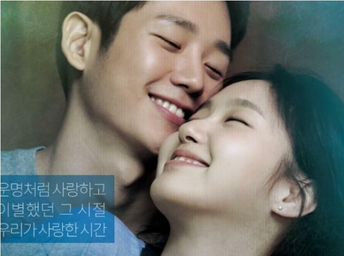
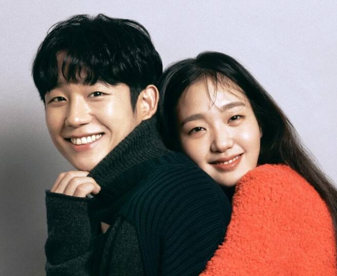
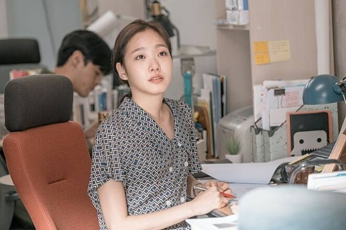
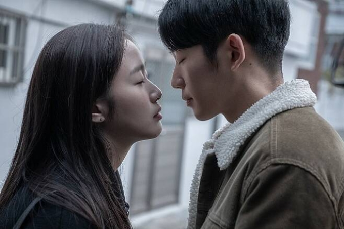
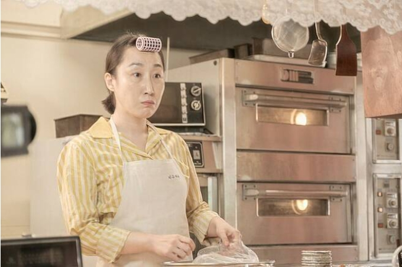
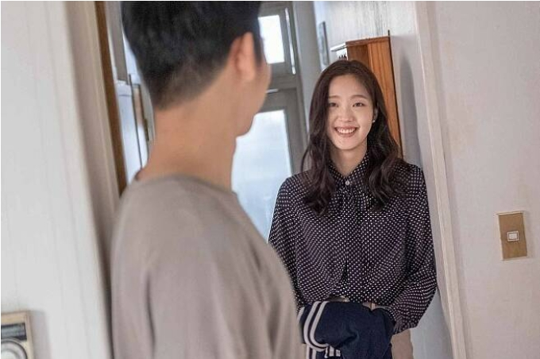
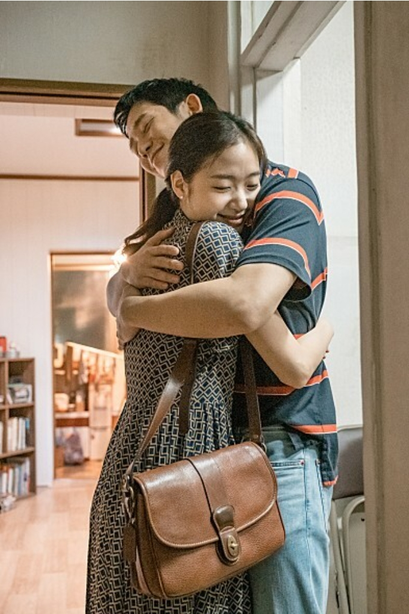

유열의...비하인드
연인에게 진심을 다한다는 정해인이 김고은에게 한 일
조회수 4.6만 | 2021. 07. 06. 09:46 수정

| 영화 <유열의 음악앨범> 비하인드 & 트리비아 4부
-
1. 정해인이 '청국장같은 남자', 김고은이 '쌀밥같은 여자'가 된 사연

정해인과 김고은은 <유열의 음악앨범> 홍보를 위해 나온 '컬투쇼'에서 상대방의 성격을 의미하는 애칭을 음식에 빗대며 설명했다. 김고은은 정해인을 '청국장같은 남자'라고 표현하며
대학교 때부터 다녔던 청국장집이 갑자기 떠올랐고, 정해인이 진국같은 남자여서 청국장이라고 표현했다"
라고 말하며 나중에는 꼭 청국장이 아니어도 된다라며 곰국으로 변경해 모두를 웃음 짓게 했다.
이에 정해인은 김고은을 '쌀밥'에 빗대며워낙 밥을 좋아한다. 하얗고 항상 우리 곁에 있다"
라며 김고은의 매력과 장점을 어필했다.
-
2.원래는 미수의 시점으로 그려지는 영화

정지우 감독은 <유열의 음악앨범> 인터뷰에서 원래 초고의 내용은 여자가 쓴 여자의 첫사랑 이야기였다고 밝히며 그 부분이 대단히 흥미로웠다고 밝혔다. 그동안의 첫사랑 영화들이 남성의 시선에서 그려졌던 것을 생각하면 너무 다르게 그려졌기 때문이다. 그 부분이 너무나 독특해서 영화화 과정에도 여성 시점으로 중심을 잡으려고 했다.
-
3.첫날밤에 손만 잡고 자게 만든 감독의 의도

-현우와 미수가 첫날밤 손만 잡고 자는 순수한 감성(?)에 대해 감독은 이 장면에서 두 사람이 처음 손을 잡게 되었다는 것을 보여주며, 손을 잡는게 그렇게 오랫동안 걸렸던 시대가 있었음을 보여주고 싶었다고 말했다.
-그리고 나서 다음 날 아침 키스가 아닌 뽀뽀만 하게 되는 장면 역시 그런 의도였다고 말했다. 현우와 미수가 만났던 그 시기는 뽀뽀지만 마치 뜨거운 것에 닿은 것 같이 느꼈던 시대였다고 말하며 그런 순간들이 나쁘지 않았음을 보여주고 싶었다고 말했다. -
4.'대학로 할매'로 불린 은자 언니 김국희

-극 중 현우와 미수 사이를 오가며 두 사람을 챙겨주는 중심 인물로 등장하는 은자 언니역의 김국희는 오디션을 통해 이 작품에 합류했다. 그녀는 대학로 연극과 뮤지컬을 통해 이름을 알린 베테랑 연기지다.
-필모그래피도 화려하다. 뮤지컬 '레드북'으로 올해 제3회 한국 뮤지컬 어워즈에서 여우조연상을 받았으며, 대표작으로 대학로 뮤지컬 '빨래', '오 당신이 잠든 사이', '베르나르다 알바', '구내과 병원' 등에 출연했다.
-정지우 감독은 뮤지컬 '넘버'에 출연한 그녀의 모습을 보고 깊은 인상을 받아 그녀를 캐스팅하고 싶었다고 한다.
-뮤지컬 '빨래'에 고정적으로 출연했다. 이 작품에서 할머니역을 맡았는데, 2012년~2017년까지 무려 6년간 연기한 탓에 '대학로 할매'로 이름을 알렸다. -
5. 정해인 최초 연하 배우 김고은

-<유열의 음악앨범> 출연전 드라마 <밥 잘사주는 예쁜 누나>에서 손예진, <봄 밤>에서 한지민 등 연상녀 선배 배우들과 주로 멜로 연기를 했다.
-김고은은 그의 멜로 연기중 최초의 연하녀 였던 셈. 이 때문에 처음으로 연하의 배우와 멜로 연기를 펼친 것에 대한 소감으로행복했다"
라는 짧은 반응을 보여 눈길을 끌었다. 물론 연하라서 라기 보다는 너무나 호흡이 좋았기 때문이었다고 한다.
-
6.연애하면 연인에게 진심을 다하는 배우가 상대 여성배우에게 한 일

-<유열의 음악앨범> 인터뷰 당시 정해인은 자신의 연애 철학에 대해 연인을 배려하고, 솔직하고, 진심을 다하고 오랫동안 관계를 유지하는 것이라고 밝혔다.
-이러한 철학은 <밥 잘사주는 예쁜 누나>,<봄 밤>,<슬기로운 깜빵생활>을 통해 배운 것이었다고 말했다.
-그래서 <유열의 음악앨범>을 촬영할 때 상대 배운인 김고은에게 이러한 자세를 유지했다고 말했다. 그래서인지 김고은도 당시 인터뷰에서 정해인의 배려가 인상 깊었다고 말하며 촬영을 시작할 때부터 편안함과 친근함이 느껴져 함께 호흡을 맞추는데 신뢰가 생겼다고 말했다.